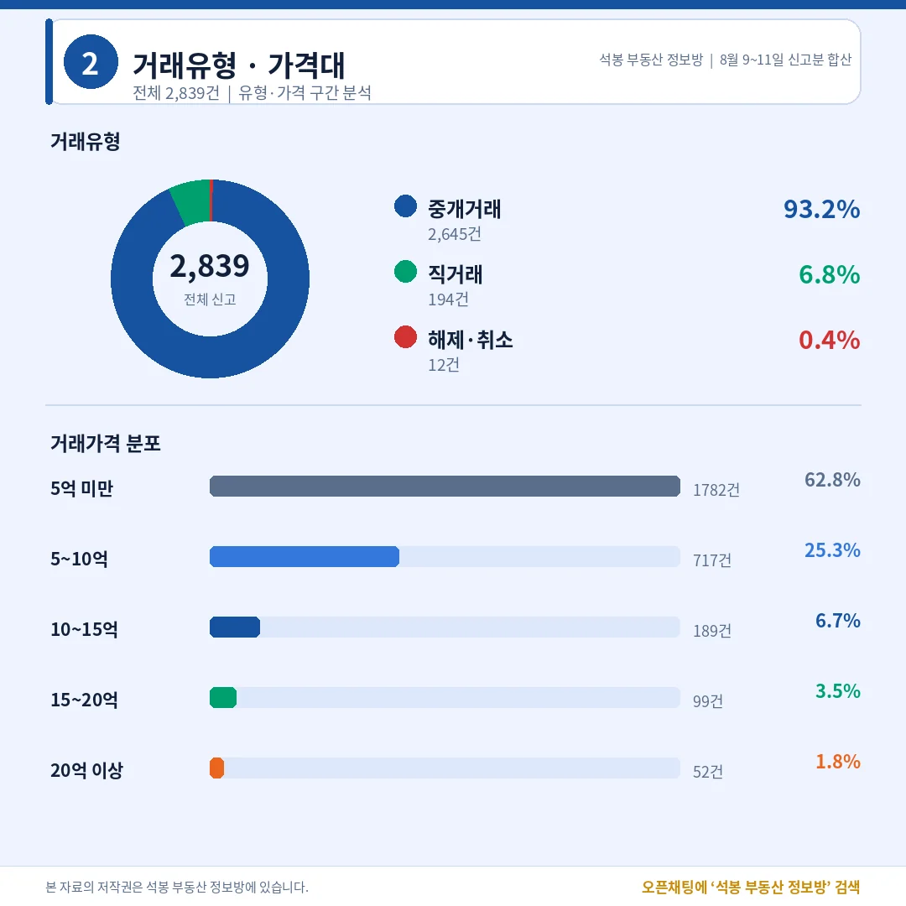
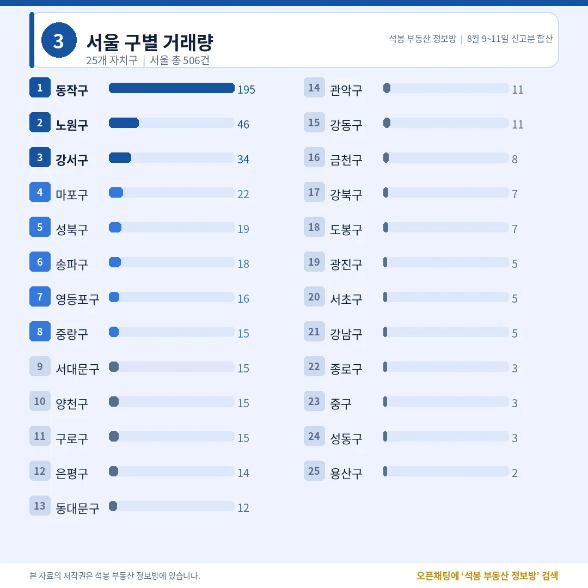
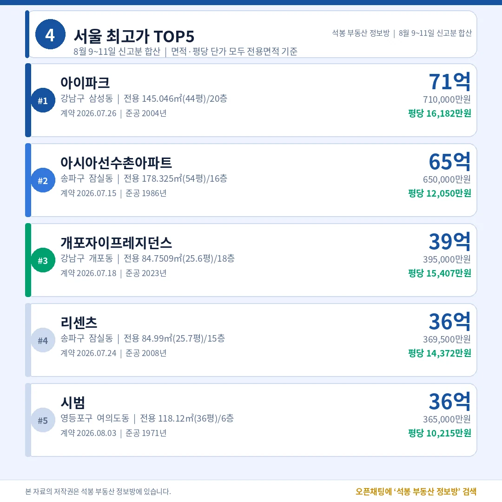
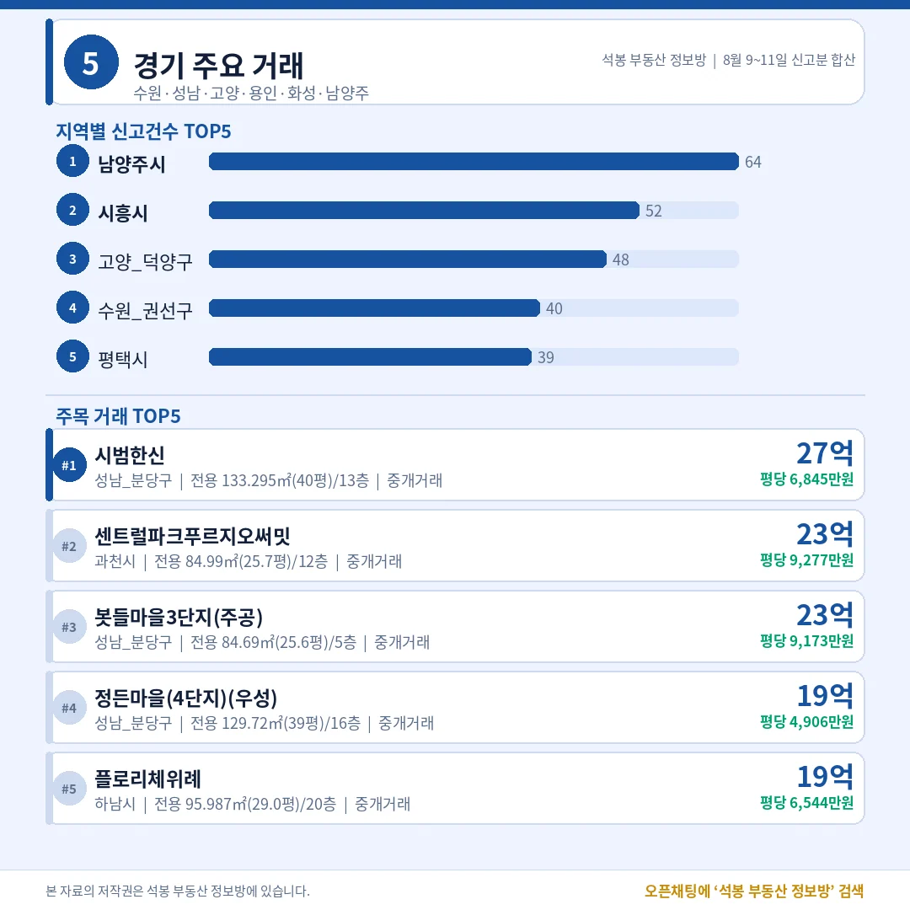
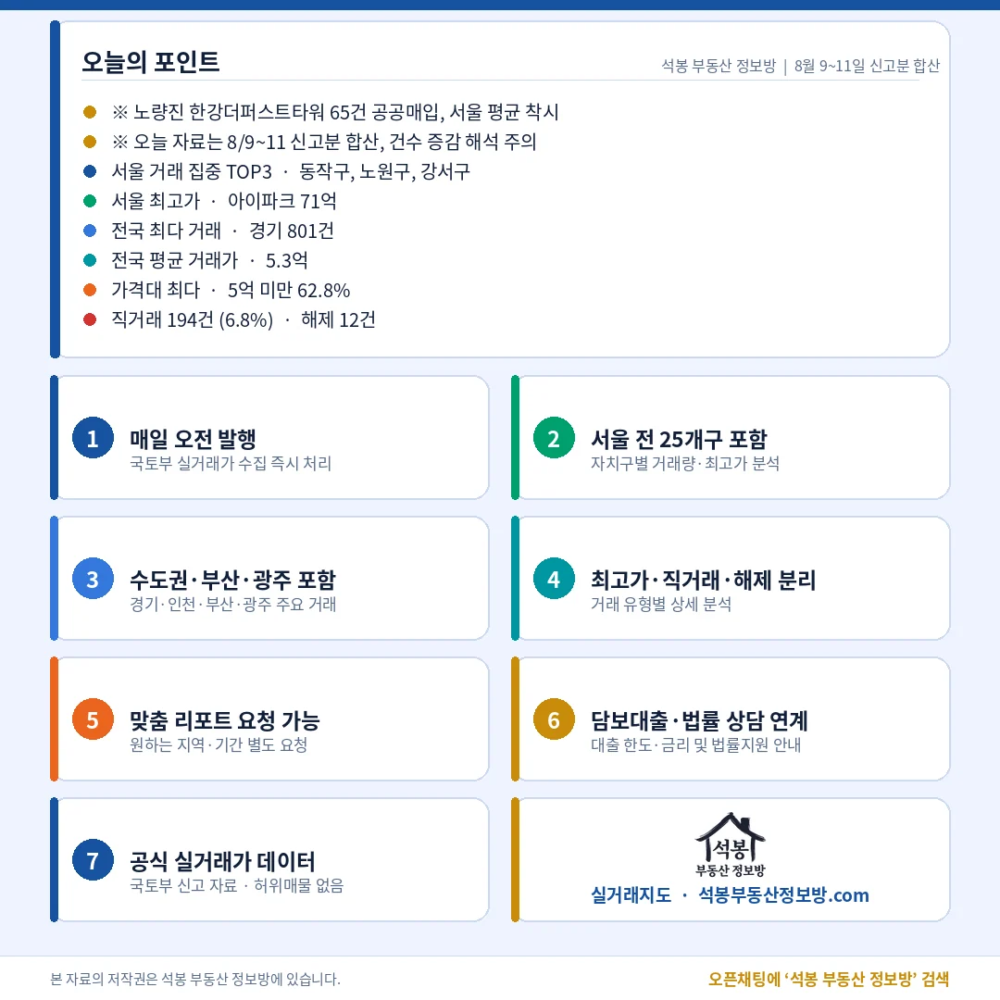

오늘 자료는 하루치가 아닙니다. 9일과 10일에 원본이 거의 풀리지 않아 그 몫까지 한꺼번에 들어왔고, 8월 9~11일 신고분 2,839건이 한 덩어리로 잡혔습니다. 그래서 건수를 어제와 비교하는 것은 의미가 없고, 비중과 중위값, 상단 가격을 보는 편이 정확합니다. 그 기준으로 표를 정리했습니다.
단지명을 누르면 그 단지의 실거래 내역과 시세를 바로 볼 수 있습니다. (면적과 평당 단가는 모두 전용면적 기준)
5억 아래 1,782건, 20억 위 52건

거래유형·가격대
사흘치를 합쳐도 가격대 구성은 평소와 거의 같습니다.
거래유형
건수
비중
중개거래
2,645건
93.2%
직거래
194건
6.8%
해제·취소
12건
0.4%
직거래 194건의 매수자는 개인 125, 공공기관 65, 법인 4입니다.
가격대
건수
비중
5억 미만
1,782건
62.8%
5~10억
717건
25.3%
10~15억
189건
6.7%
15~20억
99건
3.5%
20억 이상
52건
1.8%
전국 평균 5.32억, 중위 4.0억. 사흘을 합쳐도 두 값의 간격은 1.3억으로 벌어져 있습니다.
여기서부터는 회원에게 보여드립니다
카카오 로그인 3초면 전문을 읽을 수 있습니다. 무료입니다.
가입하시면 지역 시장조사 보고서(약식)를 2회 무료로 요청하실 수 있습니다.
이미 회원이면 같은 버튼으로 로그인만 됩니다
서울 506건 가운데 195건이 동작구 한 곳

서울 구별 거래량
수도권 1,468건으로 51.7%, 나머지 절반이 지방에서 나왔습니다.
시도
신고
시도
신고
경기
801건
충남
133건
서울
506건
충북
131건
경남
187건
대구
126건
부산
164건
대전
112건
인천
161건
광주
111건
경기 801건은 남양주 64, 시흥 52, 고양 덕양 48, 수원 권선 40 순입니다.
서울 자치구
신고
비고
동작구
195건
공공기관 매입 65건 제외 시 130건 (중위 14.77억)
노원구
46건
상계 16 · 중계 13 · 월계 10 쏠림 없음 (중위 6.0억)
강서구
34건
중위 9.73억, 최고 마곡엠밸리6단지 21.45억
마포구
22건
중위 15.54억, 최고 마포프레스티지자이 28.0억
송파구
18건
건수는 적은데 중위 24.05억
동작구 65건은 노량진동 한강더퍼스트타워 한 곳에서 나온 전용 18㎡(5.4평) 소형이고, 계약일이 7월 27일 하루로 같은 공공기관 일괄 매입입니다. 7일 원고에서 짚어 드렸던 그 건이 이번 신고분에 다시 들어왔습니다. 이 65건을 빼면 동작구 중위는 11.3억에서 14.77억으로 올라가고, 구내 최고가는 흑석동 아크로리버하임 25.8억입니다.
삼성동 아이파크 71억, 평당 1억 6천

서울 최고가 TOP5
총액 1위가 평당으로도 1위인 날은 흔하지 않습니다.
단지
위치
거래가
전용면적
평당(전용)
1 아이파크
강남 삼성동
71.0억
145.0㎡ (43.9평)
16,182만 2004년
2 아시아 선수촌아파트
송파 잠실동
65.0억
178.3㎡ (53.9평)
12,050만 1986년
3 개포자이 프레지던스
강남 개포동
39.5억
84.8㎡ (25.6평)
15,407만 2023년
4 리센츠
송파 잠실동
36.95억
85.0㎡ (25.7평)
14,372만 2008년
5 시범
영등포 여의도동
36.5억
118.1㎡ (35.7평)
10,215만 1971년
5위 여의도동 시범은 1971년 준공으로 55년 차입니다. 평당 1만 아래인데도 총액 5위 안에 든 이유는 전용 118.1㎡(35.7평)라는 면적입니다.
지역 상단은 분당 27.6억, 부산 18억

경기/인천/부산 등
건수 2위 경남은 상단이 8.38억으로, 지역마다 천장이 다릅니다.
지역
신고
최고가 단지
거래가
평당(전용)
경기
801건
분당 서현동 시범한신
27.6억
6,845만
부산
164건
남구 용호동 더블유
18.0억
4,819만
대구
126건
수성 범어동 범어아이파크1차
15.3억
5,967만
인천
161건
연수 송도동 송도더샵하버뷰(D15)
11.8억
3,265만
경남
187건
창원 의창 중동 창원중동유니시티2단지
8.38억
3,801만
평당으로 줄을 세우면 대구 범어동 5,967만원이 부산 용호동 4,819만원을 앞섭니다. 총액은 부산이 2.7억 높은데, 면적을 감안하면 순서가 뒤집힙니다.
상단 두 건은 43.9평과 53.9평, 2004년생과 1986년생

구간
서울
서울 밖
20억 이상 52건
49건
3건 (분당 2·과천 1)
15억 이상 151건
133건
18건 (경기 15·부산 2·대구 1)
서울 49건은 동작 12, 송파 12, 강남 5, 서초·마포·양천·영등포 각 3건 순입니다.
오늘 상단을 만든 것은 신축이 아니라 면적이었습니다. 1위 삼성동 아이파크는 2004년 준공에 전용 43.9평, 2위 잠실 아시아선수촌은 1986년생 53.9평입니다. 평당으로 가장 비싼 개포자이프레지던스(2023년, 15,407만원)가 총액에서는 3위로 내려앉은 것도 25.6평이라는 크기 때문입니다. 서울 상단에서는 준공연도보다 넓이가 총액을 가르고 있습니다.
주의해서 볼 숫자는 동작구 195건입니다. 자치구 1위로 보이지만 3분의 1이 공공기관이 하루에 사들인 전용 18㎡ 소형이고, 이 65건이 구 전체 중위를 3.4억이나 끌어내렸습니다. 20억 넘는 거래가 12건이나 나온 동네의 중위가 11.3억으로 찍히는 것은 시장이 아니라 계약 한 건이 만든 그림입니다.
표 보는 법 · 직거래는 중개사를 끼지 않고 당사자끼리 한 거래입니다. 면적과 평당 단가는 모두 전용면적 기준이고, 평은 ㎡를 3.3058로 나눈 값입니다. 중위 거래가는 그 지역 거래를 금액순으로 줄 세웠을 때 한가운데 값이라 평균보다 체감에 가깝습니다. 중위·평균은 해제·취소 건을 빼고 계산했고, 건수와 가격대 비중은 해제분을 포함한 전체 신고 기준입니다. 건수는 8월 9~11일 신고분 합계라 하루치가 아닙니다.
원자료: 국토교통부 실거래가 공개시스템 (2026년 8월 9~11일 신고분 합계 기준, 9·10일 원본 미갱신분 포함) · 편집·제작: 석봉 부동산 정보방 · 신고분은 계약일과 신고일이 다를 수 있으며 해제·취소 건이 뒤늦게 반영될 수 있습니다 · 본 자료는 정보 제공 목적이며 투자 권유가 아닙니다.